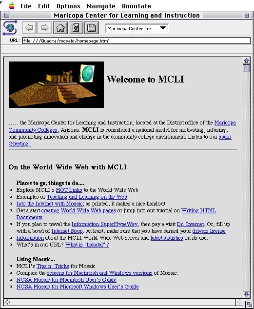

Parce qu'il souhaitait mettre en relation les documents scientifiques produits par les charcheurs
du CERN à Genève, Tim Berners-Lee a crée le protocole HTTP, la notation URL et le langage HTML.
Tim-Berners-Lee : ErfinderstolzFoto: AP
Lorsqu'il a voulu présenter son projet devant la communauté des chercheurs de l'hpertext, il a rencontré
un large scepticisme. personne ne pensait que ce bidouillage pouvait représenter de la recherche.
Ses propositions ont été rejetées des principaux congrès hypertextes à la fin des années 80.
L'envol du web
Depuis, le succès du web, amplifié par la parution du navigateur Mosaic en 1993, a permis à Tim Berners-Lee
d'acquérir une reconnaissance mondiale, de présider le W3c, et de devenir Lord en 2004.

Depuis les présentations de pages par Mosaic, le web a baucoup évolué, et permet de séparer radicalement:
la logique du texte, codée en HTML
et la présentation, en utilisant les feuilles de syle CSS